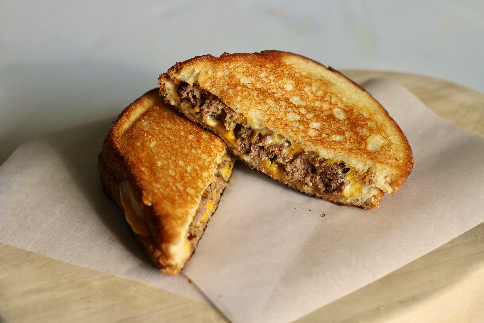

Patty Melt

Description
This mouthwatering meal combines the comfort of a grilled cheese sandwich
with the deliciousness of a cheeseburger into a juicy, satisfying patty
melt.
Ingredients
- 1 pound 85% lean ground beef
- 3 tablespoons chopped fresh flat-leaf parsley
- 1 tablespoon finely chopped garlic
- 1 tablespoon Worcestershire sauce
- 1 teaspoon Montreal-style steak seasoning
- 6 slices white bread
- 6 slices Colby-Jack cheese
Directions
-
Combine ground beef, parsley, garlic, Worcestershire sauce, and steak
seasoning in a bowl; mix until thoroughly combined. Form into 3
evenly-sized patties.
-
Warm a nonstick griddle over medium heat. Place burgers onto the warm
griddle and cook to desired doneness, 4 to 6 minutes per side. An
instant-read thermometer inserted into the center should read at least
160 degrees F (71 degrees C). Remove burgers and set aside.
-
Warm a second griddle over medium heat. Butter 1 side of each bread
slice. Place a slice of bread onto the griddle, butter-side down. Add a
slice of cheese, a burger, and a second slice of cheese. Top with
another slice of bread, butter-side up. Repeat with remaining burgers.
-
Cook until bread is golden brown on the bottom, 3 to 5 minutes. Flip and
cook until the other side is golden brown and cheese is melted, 3 to 5
minutes more.
< >
Note:
You can easily substitute with your favorite cheese/bread
combination!